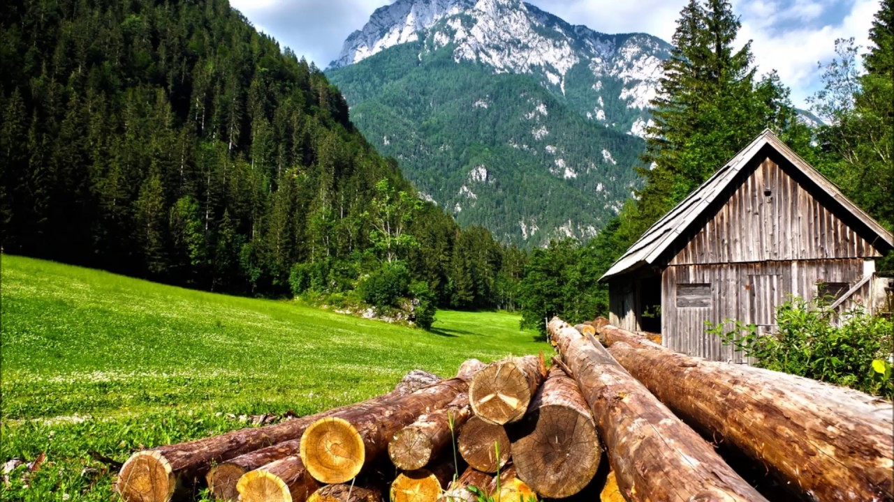

Zašto je Mentalno Zdravlje Važno?
Mentalno zdravlje igra ključnu ulogu u našem svakodnevnom životu. Osjećaj mira i sreće dolazi iznutra, a njegovanje mentalnog zdravlja pomaže nam da se nosimo s izazovima i stresom koji život nosi.
Ključni faktori za očuvanje mentalnog zdravlja uključuju redovnu tjelesnu aktivnost, zdravu prehranu, društvenu podršku i samopomoćne tehnike poput meditacije.
Savjeti za Očuvanje Mentalnog Zdravlja
- Promovirajte aktivni način života.
- Upravljajte stresom kroz vježbe opuštanja.
- Održavajte balans između posla i privatnog života.
- Razgovarajte s bliskim osobama o svojim osjećajima.
Slika: Opuštanje u Prirodi
Slika prikazuje osobu prekrasnu prirodu za opuštanje, što može biti odličan način za očuvanje mentalnog zdravlja.